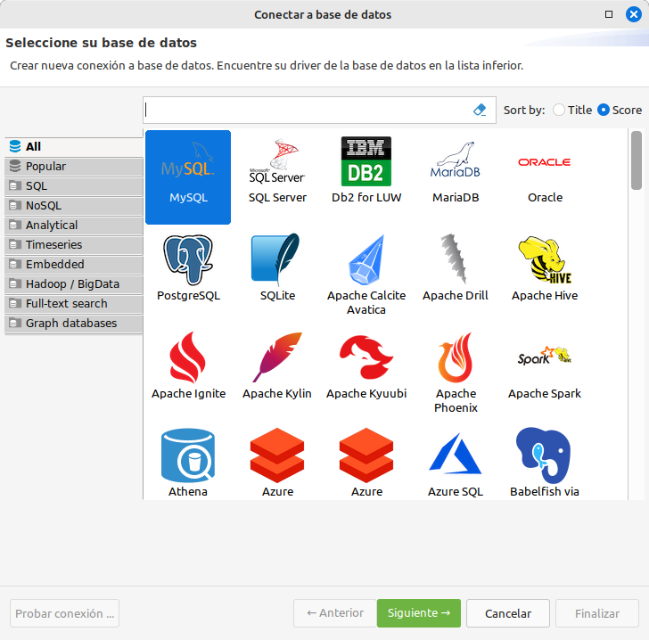
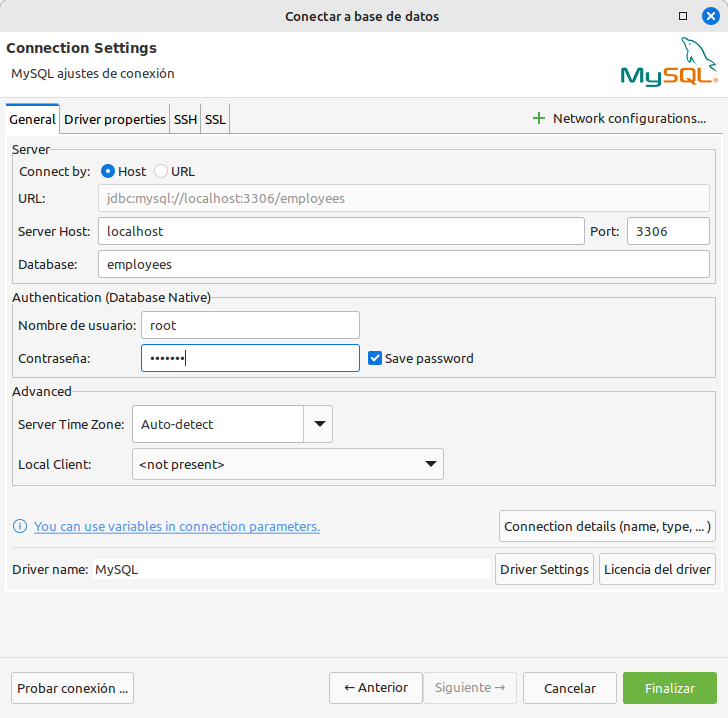
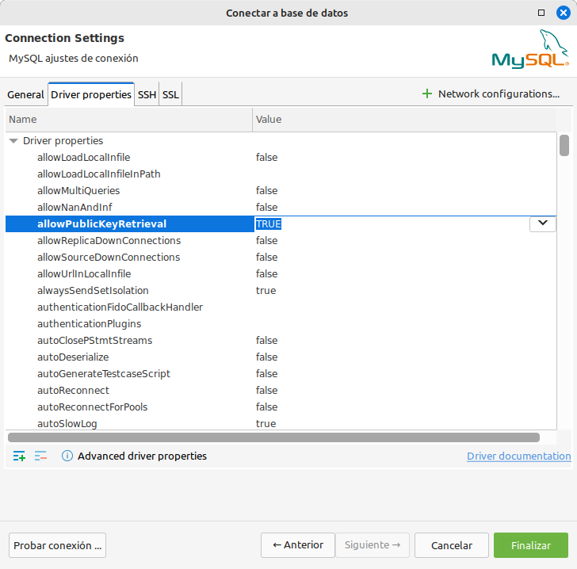
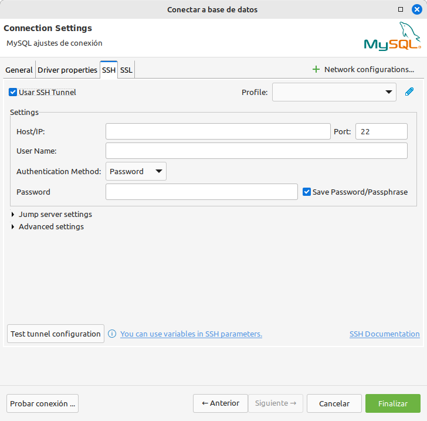
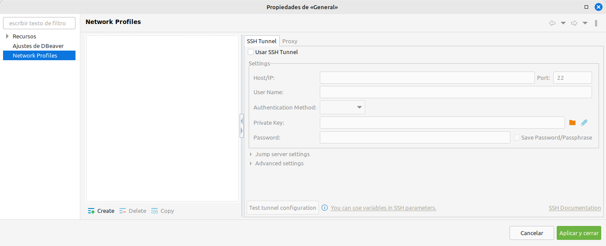
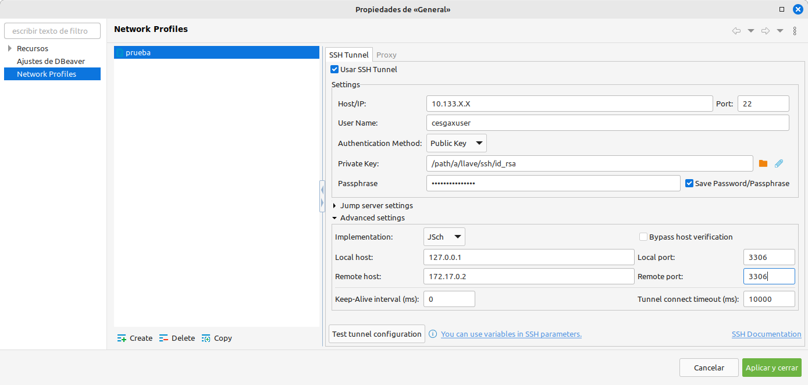
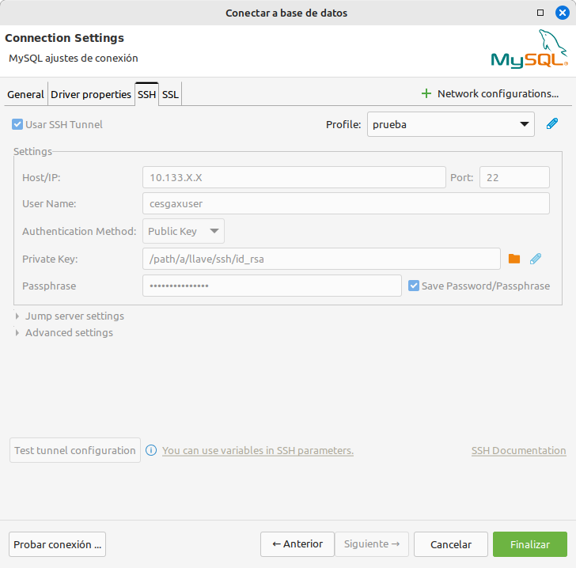

🦫 DBeaver e túneles SSH
DBeaver é un programa cliente SQL que permite ver, administrar e xestionar bases de datos. Emprega JDBC para conectarse.
É especialmente útil porque detecta e descarga automáticamente os drivers para moitos tipos diferentes de bases de datos.
Imos ver paso a paso como configurar unha conexión facendo uso dun túnel SSH simple (sen saltar por máis dun host).
Neste exemplo configuraremos un servidor de MySQL que temos instalado mediante docker
-
Seleccionamos o tipo de base de datos MySQL.

-
Na lapela General metemos a configuración básica: Usuario e contrasinal de base de datos, a propia base de datos á que imos conectar (employees) e metemos como servidor localhost e porto 3306 posto que imos redireccionar un porto hacia nos.

-
Na lapela Driver properties mudamos o valor de allowPublicKeyRetrieval a TRUE posto que é necesario no caso de empregar cifrado. Segundo a configuración, pode ser necesario.

-
Na lapela SSH dámoslle ao lápiz de editar (arriba á dereita, despois de profile). O motivo de facelo dende ahí é poder reutilizar este perfil con máis conexións a BBDD.

-
Abrirase unha nova ventana, activamos o check Use SSH tunnel.

-
Activaranse tódalas casiñas a curbir. Na parte de Settings, no Host/IP meteremos o enderezo IP do servidor de SSH e o porto por defecto 22. Cubrimos o usuario e seleccionamos o método de autenticación Private Key. Prememos no 📁 cartafol laranxa e buscamos a nosa chave privada (id_rsa ou equivalente se empregas outra diferente a RSA). No passphrase irá o contrasinal desta chave privada (se o arquivo está protexido).

-
Seguimos cubrindo datos na parte de Advanced settings. En Local host metemos a nosa IP do interfaz de loopback (127.0.0.1) para non expoñer o servizo á nosa rede, deixamos o porto por defecto 3306 posto que o puxemos no paso 2. En remote host metemos o servidor de BBDD ao que nos queremos conectar: 172.17.0.2 e porto por defecto: 3306.
-
Co perfil xa seleccionado, podemos premer no botón Probar conexión e finalmente en Finalizar

O programa ten opcións para múltiples saltos no caso que precises conectarte a varios servidores ata chegar á rede de producción.
Ollo, ten en conta que se fas múltiples saltos, a velocidade podería verse diminuida.